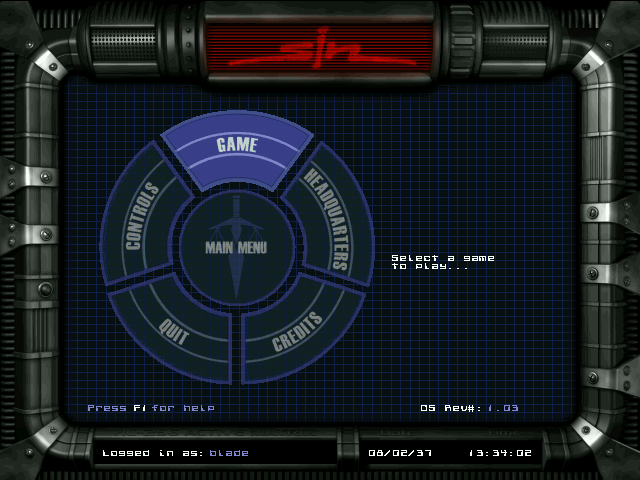
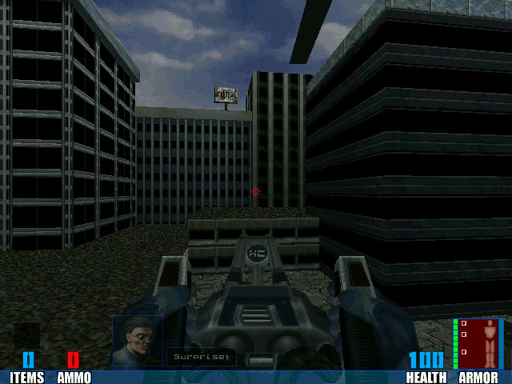

名稱：原罪 (Sin，英文版)
簡介：Ritual 1998年出品的第一人稱射擊遊戲，台灣由億弘代理進口，但並未中文化。1999
年由2015公司推出「罪惡的代價（Wages of Sin）」任務資料片 [待補]。


保護：光碟
備註：本遊戲主程式有1998/10/29的1.00原始版、1998/11/3的1.00億弘代理版、1999/9/24
的1.03最終版等多種光碟。原始版與億弘代理版主要差別在於，億弘代理版使用了較
舊的3dfxgl.dll，原始版使用的檔案則與1.03最終版相同。
備註：XP以上系統安裝主程式時若有問題，請設定Setup.exe為Win9x相容。
備註：資料片完裝時，會將主程式升級到1.03。